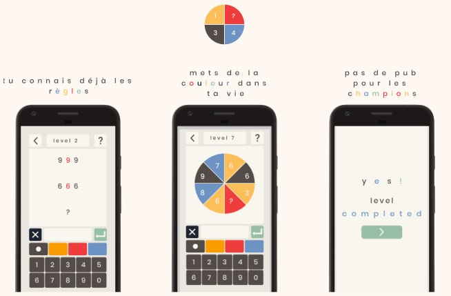

Pour un side project, je me suis lancé le défi de créer un jeu vidéo, entièrement seul.
Je suis ravi de dire que j'ai réussi avec s o l v e o !
Ayant une formation en psychologie,
je n'avais aucune connaissance technique en développement de logiciels.
Pour le challenge personnel, j'ai mis à apprendre à coder par moi-même et j'ai pris beaucoup de plaisir à le faire.
Mais en plus de faire des petits projets simples
comme une calculatrice web,
je me suis toujours demandé si je pouvais faire un projet plus conséquent,
comme une application que des utilisateurs pourraient télécharger et utiliser.
J'ai donc désigné le jeu en utilisant Figma, ce qui comprend le concept du jeu à proprement parler, en passant par l'interface utilisateur, les traductions, les énigmes, les astuces...Tout de A à Z !

J'ai choisi de coder le jeu en GDscript, le langage de Godot. Je me suis aussi familiarisé avec Github et StackOverflow, comme tout développeur qui se respecte ! J'ai également ajouté le jeu sur le Play Store, conçu le logo ainsi que tout les éléments créatifs mis en place.

Le plus plaisant dans la création d'un jeu, c'est de loin la liberté artistique ! Je savais que je voulais
faire un jeu de puzzle de maths, alors après une rapide phase d'évaluation et de benchmark,
j'ai découvert que la plupart des jeux de ce genre ont l'air soit de très vieux jeux, avec du
skeumorphsime en-veux-tu en voilà, soit très sombre, comme si la couleur ne faisait pas sérieux.
J'ai donc voulu faire un jeu avec une interface utilisateur simple,
sobre et très colorée. Quelque chose de "mini-métroesque" !
De plus, les couleurs sont partie intégrante du jeu, où vous devez résoudre des énigmes en les utilisant.
Ce qui est, je pense, un différentiateur intéressant et apporte quelque chose de nouveau au genre !
La réalisation des puzzles et des indices était également amusante, malgré le fait que cela prenne du temps.
Trouver le parfait équilibre entre "trop dur" et "trop facile" a été laborieux, et même avec mes ressources
limitées pour les tests utilisateurs, je suis certain que l'expérience globale pourrait encore être améliorée.
C'est la vie !
Ce qui serait génial dans un monde parfait serait d'avoir l'aide de bêta-testeurs et d'analyser les niveaux
via analytics pour voir les points bloquants.
Puis, en fonction de ces données,
réorganiser les niveaux de manière plus "équilibrée". C'est en quelque sorte ce que
j'ai pu faire à mon échelle via les tests utilisateurs, qui m'ont aidé à peaufiner l'interface,
la compréhension globale des écrans ainsi que certaines énigmes qui n'étaient pas si intuitives.

La correction des bugs a été très pénible. Pas le moment le plus "fun" du projet, clairement...
Maintenant, j'ai encore plus d'empathie pour les autres développeurs. Apprendre à coder, même en GDScript,
un langage similaire à python qui est relativement accessible, a été un sacré défi, mais un défi amusant.
Tous ces aspects comme la sauvegarde et le chargement de fichiers,
ou encore la gestion des ressources étaient compliquées de prime abord,
mais maintenant je peux faire d'autres jeux plus facilement !
Devoir faire des recherches sur les utilisateurs sans budget était également un autre challenge.
C'était plus délicat et si j'avais eu plus de temps à consacrer au projet,
j'aurais certainement fait plus d'observation, comme je le fais dans mon travail quotidien.
Mais ce projet était surtout technique, donc je suis vraiment content de la manière dont il a tourné. J'ai également
réalisé que le marketing d'un jeu était un point majeur de la conception... La prochaine fois, j'essaierai de faire mieux :)
En tout cas, merci de m'avoir lu ! Vous pouvez télécharger s o l v e o sur Google Play ici. 📲
Vous pouvez également en savoir plus sur mon mémoire sur la musique et les jeux vidéo en cliquant ici. 🎵